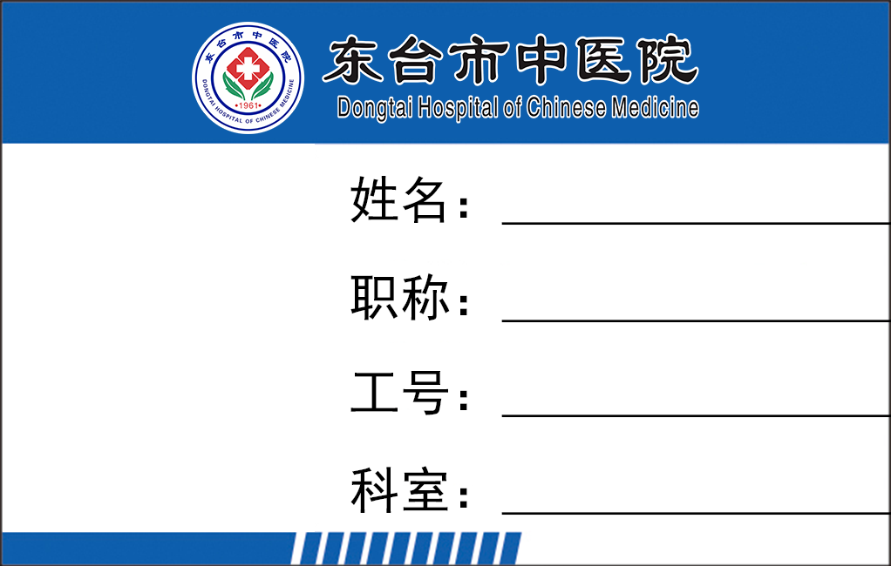

公开介绍
旁注 ›司籍处
中医药文化宣传与推广中心
浏览首页
员工登录
员工可登录办理工号、工牌。
页面说明、流程、配色约定与工程对齐见 设计旁注。
中医药文化宣传与推广中心
员工可登录办理工号、工牌。
首次使用，请选择手机号登录。绑定微信后，也可使用微信登录。
请填写本人身份证上的姓名和证件号码。
一草一木，皆有来处
走近本草 · 读懂传统从一草一木出发，读一读藏在四季里的传统文化。
循着熟悉的食材，探寻日常饮食中的风物与记忆。
如需恢复，请联系医院管理员。
欢迎使用员工服务
如需再次使用，请重新加入。
原有的未发放工牌申请已停止办理，重新加入后也不会恢复。
员工服务结束不影响已有工号。再次加入后，可按当前资料申请工牌。
账户仍可使用，也可以继续浏览医院文化与科普。
没有邀请码，请联系医院管理员。
按本人的实际情况选择，用于分配工号。
第三方人员、学习及培训人员，请选择具体类别。
今年入职且尚无工号，可在此申请。往年入职或曾有工号，请联系管理员办理。
请核对后再申请。
确认后，系统将为你分配工号，无需等待审核。
类别选错了，请返回修改。工号分配后如需更正，请联系管理员。
生效日期：2026-10-01
信息如需更正，请联系管理员。
请选择照片，或上传新照片。
请将人像置于框内，保持面部清晰、完整。
拖动照片调整位置，双指缩放大小
请核对照片与个人信息，预览后再提交。
不填时，工牌上显示“无”。

陈思远 副主任医师 12607 呼吸内科 科主任资料已更新，请重新预览并确认。
本次申请尚未提交。
绑定后，可使用微信登录司籍处网站和小程序。
不绑定也可以继续使用手机号登录。
包括当前设备，以及其他设备上的网站和小程序登录。